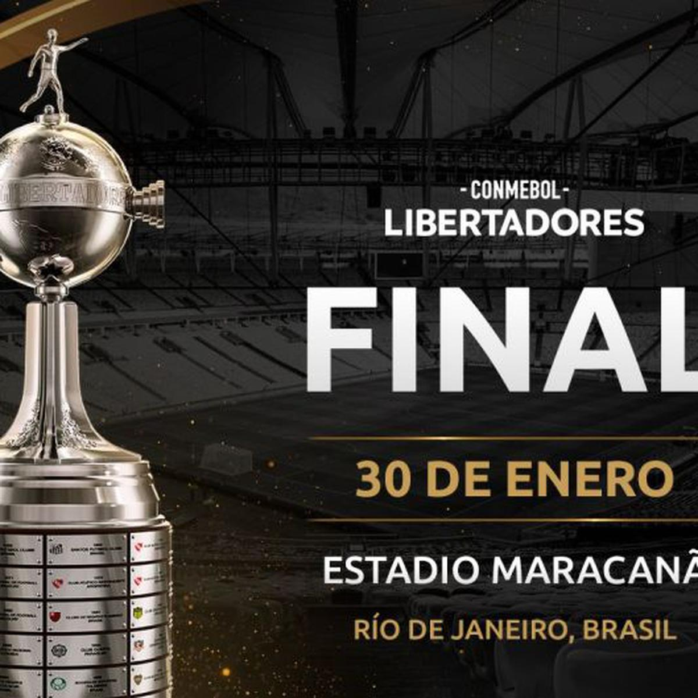
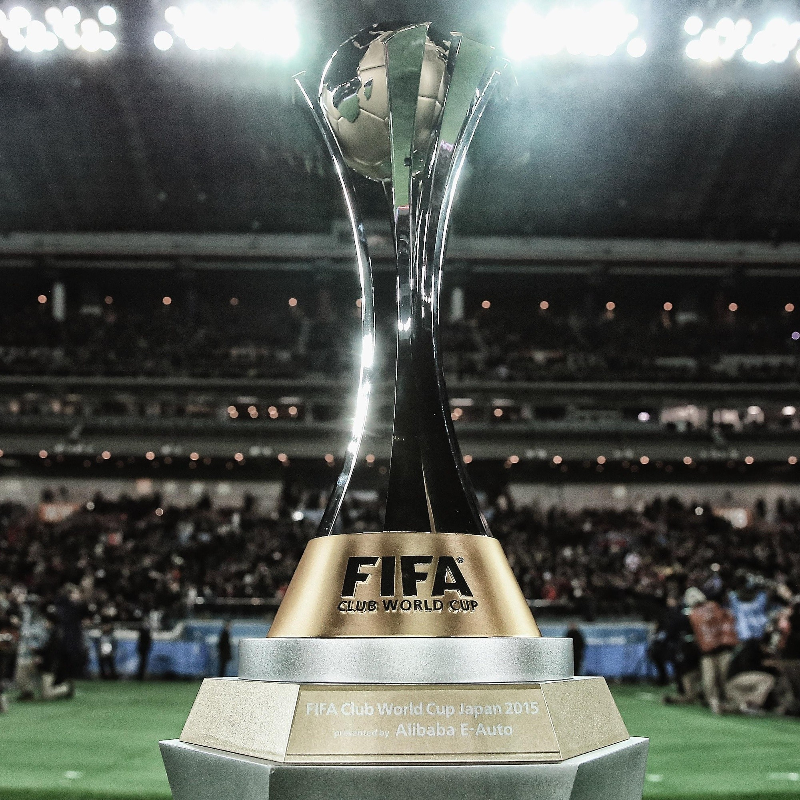
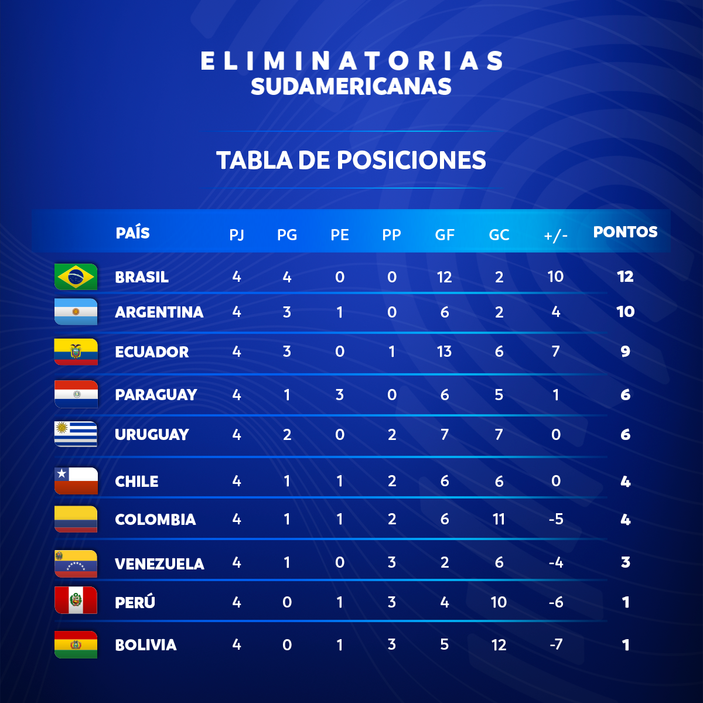
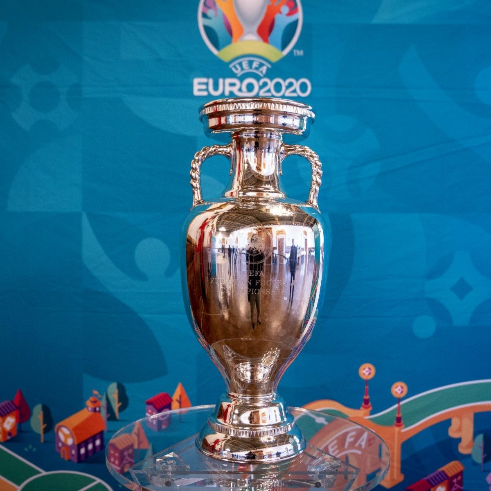
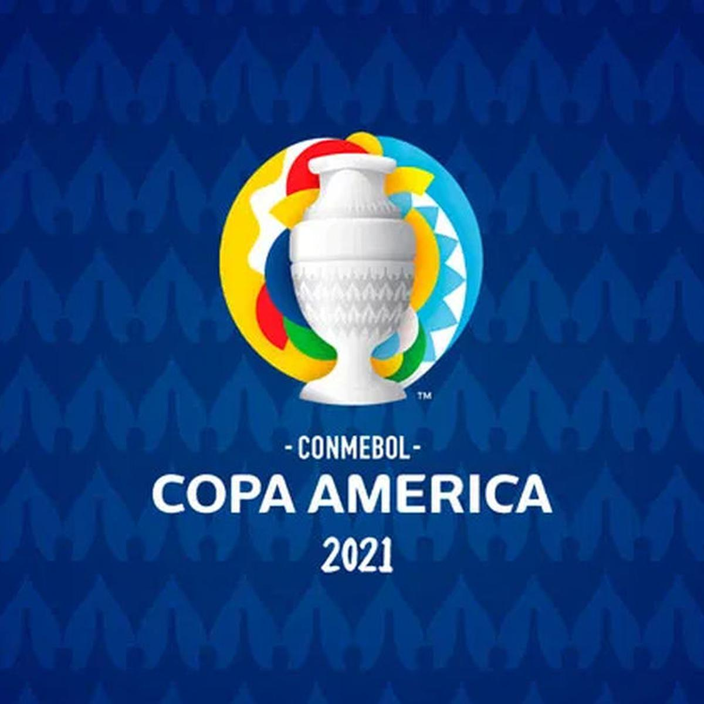

Calendario 2021
Todos los eventos deportivos del año que comienza – Primer semestre
Especial. El 2021 llega cargado con decenas de eventos deportivos de mucha relevancia entre los que destacan la Copa América, la Eurocopa de Naciones y la final de la Champions League.




